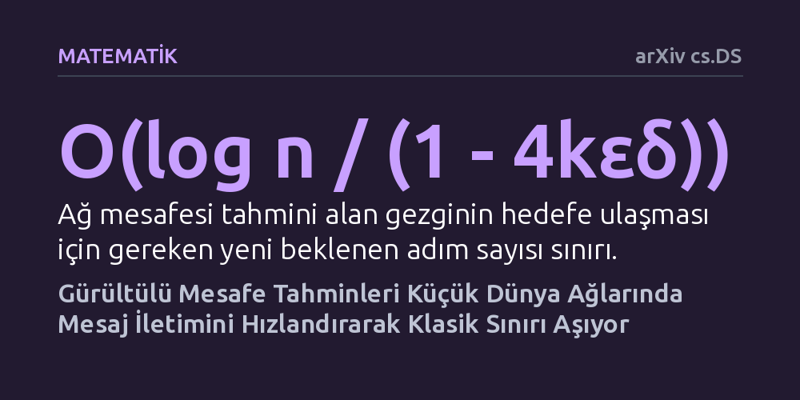

MATEMATIK · arXiv cs.DS · 2026-09-12
Araştırmacılar, küçük dünya ağlarında yön bulma algoritmalarının gürültülü mesafe tahminleriyle hızlandırılıp hızlandırılamayacağını kuramsal olarak inceledi. Doğru türde sunulan sınırlı tahminlerin mesaj iletim süresini klasik sınırın ötesinde kısalttığı ve koordinatların gizlendiği ağlarda bile hedefe güvenle ulaşılabildiği kanıtlandı.
Karmaşık ve mahremiyet odaklı devasa ağlarda yol bulmak için her noktanın tam konumunu bilmeye gerek olmadığını, küçük ve kusurlu ipuçlarının bile yön bulmayı belirgin şekilde hızlandırabileceğini gösteriyor.

Sosyal ağlardan internet altyapısına kadar pek çok karmaşık yapı, 'küçük dünya' prensibiyle işler. Herhangi iki birey ya da sunucu arasında yalnızca birkaç adımlık bağlantı bulunur. Ancak bir ağda kısa yolların var olması, o ağ içinde yolunu arayan bir mesajın bu kestirmeleri kolayca bulabileceği anlamına gelmez. Bilgisayar bilimci Jon Kleinberg, 2000 yılında ortaya koyduğu klasik modelde, yalnızca yerel komşularını gören bir gezginin hedefe ulaşmak için açgözlü bir strateji izlediğinde adım sayısının ağ boyutunun logaritmasının karesi oranında arttığını göstermişti.
Uzun yıllar boyunca bu sınır, merkezi bir haritaya sahip olmayan yerel yönlendiriciler için aşılamaz bir çıta olarak kabul edildi. Fakat günümüzün dağıtık sistemleri ve algoritmik altyapıları, karar anında sisteme ek ipuçları sağlayabilen tahmin mekanizmalarına sahiptir. İşte bu çalışma tam da bu noktada devreye giriyor: Bir rota ileticisine hedefe olan mesafeye dair kusurlu ve gürültülü tahminler fısıldanırsa, bu klasik hız sınırı aşılabilir mi?
Yazarlar, bu soruyu yanıtlamak için 'tahminli açgözlü yönlendirme' adını verdikleri kuramsal bir çerçeve kurdu. Bu modelde ağ üzerinde ilerleyen gezgin bir ajan, her adımda hedefe olan mesafesini tahmin eden bir bilgi kaynağından (kâhin) yararlanır. Ancak bu tahminler kusursuz değildir; belirli bir hata ve gürültü payı içerir. Üstelik kâhin, ajanın o ana kadar izlediği tüm rotayı hesaba katarak her adımda yeni bir tahmin üretir.
Araştırmacılar iki farklı senaryoyu matematiksel olarak inceledi. İlk senaryoda gezgin ajan, düğümlerin ızgara üzerindeki koordinatlarını bilir fakat henüz ziyaret etmediği düğümlerin sunduğu kestirme bağlantılardan habersizdir. İkinci senaryoda ise günümüzün gizlilik ve mahremiyet odaklı ağlarına uygun olarak, düğümler koordinatlarını kesinlikle paylaşmaz. Gezgin, yönünü yalnızca hedefe olan ızgara mesafesini tahmin eden gürültülü sinyallere göre belirlemek zorundadır.
Çalışmanın matematiksel analizleri çarpıcı bir sonuca işaret etti: Koordinatları bilen bir ajana kestirme yolları içeren ağ mesafesine dair gürültülü bir tahmin verildiğinde, iletim süresi klasik logaritmik kare düzeyinden doğrudan logaritmik düzeye inmektedir. Araştırmacılar bu durumu, "doğru türde mütevazı miktarda tahmin bilgisinin merkeziyetsiz yönlendirmeyi hızlandırmaya yettiği" şeklinde ifade etmektedir.
Daha da dikkat çekici olan bulgu ise koordinatların tamamen gizlendiği mahremiyet senaryosunda ortaya çıktı. Ağ düğümleri konumlarını hiç açık etmese dahi, sadece ızgara mesafesine dair gürültülü tahminler alan bir gezginin hedefe güvenilir şekilde ulaşabildiği kanıtlandı. Bu durumda adım sayısı ağ boyutuna oranla doğrusal kalsa da, sıfır konum bilgisiyle dahi mesajın kaybolmadan hedefe varabileceği matematiksel olarak teminat altına alındı.
Elde edilen kuramsal bulgular, tahmin mekanizmaları ile klasik algoritma teorisinin kesiştiği yeni bir yönlendirme anlayışına kapı aralıyor. Modern büyük ölçekli ağlarda tam haritayı her düğümde saklamak hem muazzam bir bellek yükü yaratmakta hem de ciddi mahremiyet endişelerine yol açmaktadır. Bu çalışma, kusursuz haritalar yerine hafif ve gürültülü tahmin modelleri kullanmanın yön bulma verimini belirgin biçimde artırabileceğini gösteriyor.
Özellikle sansüre dirençli eşler arası (P2P) ağlar ve kullanıcı gizliliğini önceleyen iletişim protokolleri, düğümlerin fiziksel konumlarını ifşa etmeden yönlendirme yapabilen bu tür yaklaşımlardan ilham alabilir. Kusurlu bir pusula bile, hiç pusula olmamasından veya her köşe başını ezberlemeye çalışmaktan çok daha verimli bir yolculuk sağlayabilir.